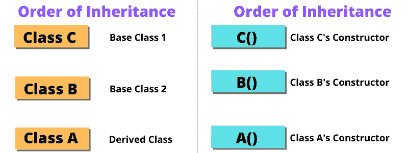

C++ 中带继承的构造器调用顺序
原文：https://www.studytonight.com/cpp/order-of-constructor-call.php
在本教程中，我们将学习 C++ 中构造器带继承调用的顺序。如果不熟悉 C++ 中的构造器，可以从 C++ 构造器教程中了解。

派生类构造器中的基类默认构造器:
当我们从基类派生一个类时，基类的所有数据成员都将成为派生类的成员。我们使用构造器来初始化数据成员，这里显而易见的情况是，当数据继承到派生类中时，谁将负责初始化它们？初始化继承的数据成员构造器是必要的，这就是为什么首先调用基类的构造器。在下面给出的程序中，我们可以看到继承中构造器的执行顺序如下:
#include <iostream>
using namespace std;
class Base
{
int x;
public:
// default constructor
Base()
{
cout << "Base default constructor\n";
}
};
class Derived : public Base
{
int y;
public:
// default constructor
Derived()
{
cout << "Derived default constructor\n";
}
// parameterized constructor
Derived(int i)
{
cout << "Derived parameterized constructor\n";
}
};
int main()
{
Base b;
Derived d1;
Derived d2(10);
}
基础默认构造器 基础默认构造器 派生默认构造器 基础默认构造器 派生参数化构造器
派生类构造器中的基类参数化构造器:
让我们看看如何在派生类中调用参数化构造器，在派生类中定义参数化构造器时，需要使用**:**运算符显式定义派生类的参数化构造器的调用。
#include <iostream>
using namespace std;
class Base
{
int x;
public:
// parameterized constructor
Base(int i)
{
x = i;
cout << "Base Parameterized Constructor\n";
}
};
class Derived: public Base
{
int y;
public:
// parameterized constructor
Derived(int j):Base(j)
{
y = j;
cout << "Derived Parameterized Constructor\n";
}
};
int main()
{
Derived d(10) ;
}
基本参数化构造器 派生参数化构造器
这里有一些基本的规则来计算c++T3 中带继承的构造器调用顺序。
施工总是从基础开始
class。如果有多个基类，那么从最左边的基类开始构造。如果有virtual遗传，那么它被给予更高的优先权)。然后构造成员字段。它们按照声明的顺序初始化
最后，构建
class本身析构器的顺序正好相反
相关教程: